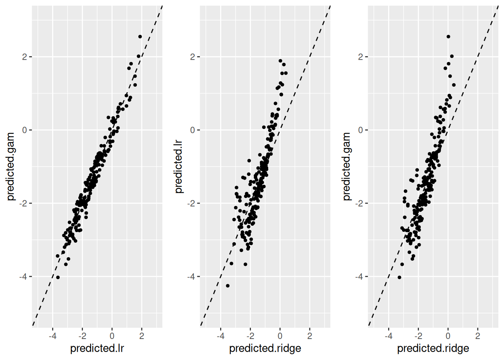

After preparing the data, the next step will be modelling. Modeling helps us understand how variables relate to each other. Models allow us to predict outcomes for new observations. Any prediction function demonstrates this - it takes new patient data and estimates their probability of the outcome occurring. This is crucial for clinical decision-making.
Key Sections :
This part 1.2 Modelling will consist of some sections :
Choosing a modelling strategy
Building The Model
Assessing model performance including AUC, Calibration Plot
Assessing performance using validation metrics
1. Choosing The Model Strategy
During this section, we will cover three models, including logistic regression with splines, GAM, Ridge.
The first step is load the neccessary libarary
For the first step, load the datasets from previous part.
new.patient <- new.patient <-data.frame(x1=-0.3, x2=-0.5, x3=1, x4=1, x5=2)new.logit <-with(new.patient,-2+0.5*x1+0.1*x1^2+0.2*x2-0.05*x2^2+0.1*(x3==2)+0.2*(x4==2)+0.2*(x5==2)-0.1*(x5==3)+0.2*(x5==4))# this is the true log oddsexp(new.logit)
[1] 0.1282851
First Method : Regression Spline
regression.splines<-list()for (i in1:n.impute){ regression.splines[[i]]<-lrm(y~rcs(x1,3)+rcs(x2,3)+x3+x4+x5, data=imputed1[[i]]) }
This creates multiple logistic regression models (one for each imputed dataset):
lrm() fits logistic regression models
rcs(x1,3) and rcs(x2,3) create restricted cubic splines with 3 knots for variables x1 and x2
x3, x4, x5 are included as linear terms
Each model is fitted on a different imputed dataset (imputed1[[i]])
prediction.gam <-function(new.patient, single.fit =NULL, multiple.fit =NULL){if(!is.null(multiple.fit)){ mygrid <-expand.grid(k =1:dim(new.patient)[1], i =1:length(multiple.fit))# Creates a helper function that predicts for patient k using model i. ff <-function(k,i){predict.gam(multiple.fit[[i]], newdata = new.patient[k,]) } prediction_matrix <-matrix(mapply(ff, mygrid$k, mygrid$i),nrow =dim(new.patient)[1], ncol =length(multiple.fit)) prediction <-apply(prediction_matrix, 1, mean) }elseif(!is.null(single.fit)){ ff <-function(k){predict.gam(single.fit, newdata = new.patient[k,]) } prediction <-sapply(1:dim(new.patient)[1], ff) }return(prediction)}
mygrid variable explanation :
Creates a grid combining all patients (k) with all models (i)
This allows making predictions for each patient using each model
ff variable explanation :
Creates a helper function that predicts for patient k using model i.
prediction_matrixvariable explanation :
Uses mapply to apply the prediction function to all combinations
Creates a matrix where rows = patients, columns = different imputed models
Each cell contains a prediction for that patient from that model
prediction variable explanation :
Takes the average prediction across all imputed models for each patient (row-wise mean). This follows multiple imputation methodology where results from different imputations are combined.
If only one model is provided, makes predictions for each patient using that single model.
Overall Purpose: This function implements a complete workflow for fitting GAMs to multiple imputed datasets and making robust predictions by averaging across all fitted models, which is the standard approach in multiple imputation analysis.
Creates a sequence of lambda (regularization parameter) values from 10² to 10⁻¹⁰, decreasing by steps of 0.3 on the log scale. This gives a range of regularization strengths to test.
fit.ridge <-list()
Creates an empty list to store Ridge regression models - one for each imputed dataset.
Warning: Removed 1 row containing missing values or values outside the scale range
(`geom_point()`).
Warning: Removed 1 row containing missing values or values outside the scale range
(`geom_point()`).

What to look for in the results:
High correlation: Points tightly clustered around the diagonal line
Bias: Points systematically above/below the diagonal
Outliers: Points far from the diagonal where methods strongly disagree
Range differences: Whether one method produces more extreme predictions than another
This type of visualization is common in model validation to assess whether different statistical approaches yield consistent results, which can increase confidence in the findings.
Calculate Apparent Performance of The Models
For binary outcomes we need to assess performance in terms of discrimination and calibration. We will use the pROC package.
library(pROC)apparent.auc.LR <-auc(complete.data$y~predicted.lr)apparent.auc.gam <-auc(complete.data$y~predicted.gam)apparent.auc.ridge <-auc(complete.data$y~predicted.ridge)#calibration in the largemean(complete.data$y=="1")
[1] 0.26
These calculate the apparent AUC for each model using the predicted values against the actual outcomes (y). The term “apparent” suggests these are calculated on the same data used to train the models, which can lead to overly optimistic performance estimates.
mean(expit(predicted.lr))
[1] 0.2474065
mean(expit(predicted.gam))
[1] 0.2464704
mean(expit(predicted.ridge))
[1] 0.212549
We see that the mean estimated event rate by ridge is quite off. Next, we fit calibration lines and calculate AUC.
Now, we would like to calculate and evaluate model performance by combining discrimination and calibration metrics into a single assessment.
Then, we will create calibration plot. Calibration plot (also called a reliability diagram) to visually assess how well the logistic regression model’s predicted probabilities match the observed event rates across different risk levels.
Creates a dataframe with observed outcomes (y) and predicted probabilities (converted from log-odds using expit())